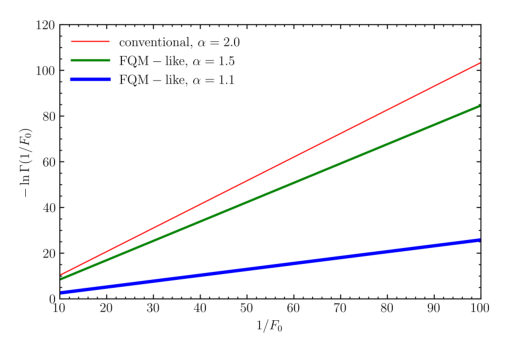
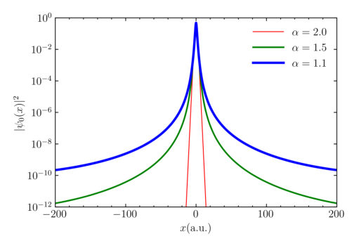
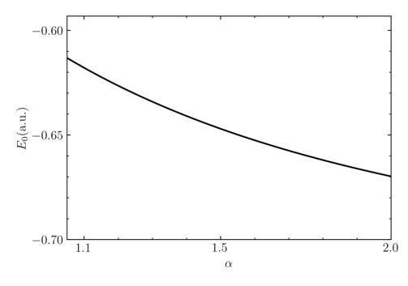
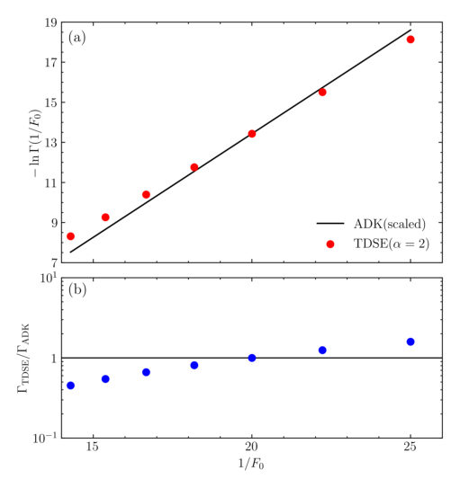

← Index · ← Previous · Next →
Authors: Muhammad Bilal Akram Dastagir, Omer Tariq, Safaa Alqrinawi, Shaikha Al-Naimi, Ahmed Farouk, Saif Al-Kuwari
Type: both · Category: disordered systems and neural networks · PDF: https://arxiv.org/pdf/2605.05394v1
Analysis basis: full PDF text, analyzed in chunks
Topic relevance: QC/QI experiment 2/5 · quantum measurements 2/5
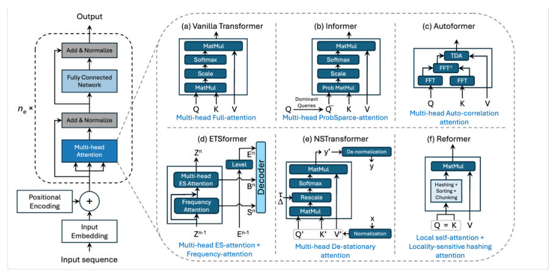
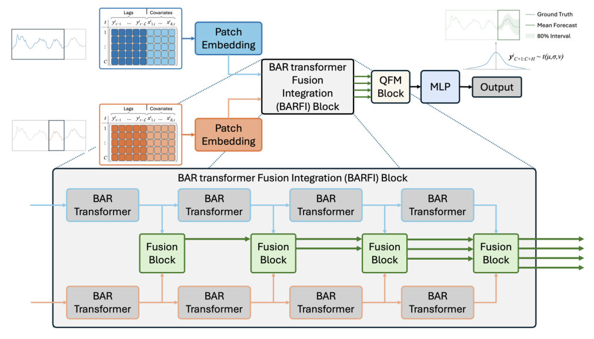
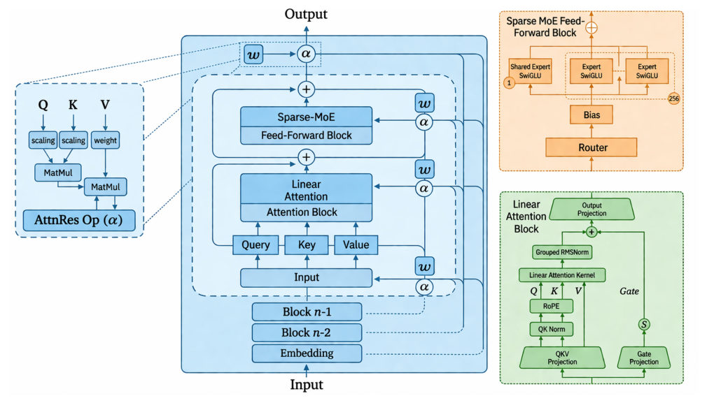
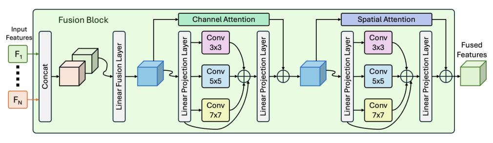
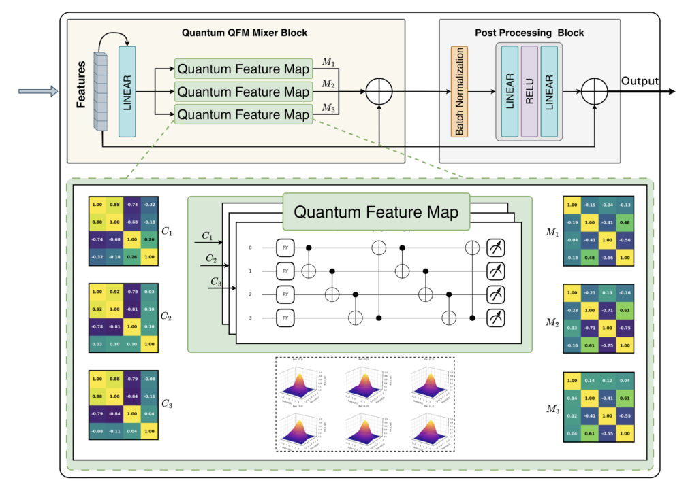
Summary. The paper introduces BARFI-Q, a hybrid quantum-classical framework designed to forecast complex, multivariate time-series data from atom interferometers. By using quantum feature mapping and an adaptive residual mechanism, the model effectively handles the periodic and heterogeneous nature of interferometric signals. The results show that this approach significantly improves the accuracy of phase reconstruction compared to standard deep learning models.
Why it may be interesting. It demonstrates a practical application of hybrid quantum-classical machine learning to improve the predictive capabilities of quantum sensors, specifically addressing the non-linear and periodic nature of interferometric signals.
Main problem. Accurate multivariate time-series forecasting of heterogeneous signals in atom interferometry, specifically addressing phase evolution, fringe dynamics, and complex interactions among multiple sensing sources.
Main result. The BARFI-Q framework consistently outperforms strong classical Transformer-based baselines in predicting wrapped residual phase errors, with the quantum-enhanced version providing superior accuracy and stability.
Method. A hybrid quantum-classical framework (BARFI-Q) utilizing patch-based embedding, a dual-branch temporal architecture with adaptive block-attention residual aggregation, and a Quantum Feature Mapping (QFM) module for latent enhancement.
Model / system. The physical system is a light-pulse atom interferometer used for precision sensing (e.g., gravimetry or inertial navigation), generating multivariate temporal streams of phase, fringe behavior, and control variables.
Key observables. Wrapped residual phase error, population ratio, fringe amplitude, and fringe contrast.
Important parameters / regimes. Historical window size (L), number of qubits (N), circuit depth (L), and encoding strategy (Angle, Amplitude, or Phase).
Assumptions / limitations. The study focuses on a one-step-ahead forecasting setting and assumes the availability of a real-time classical phase estimate to resolve phase ambiguity.
Figures summary. Figure 1 compares existing Transformer models; Figure 2 shows the BARFI-Q architecture; Figure 3 details the dual-branch transformer; Figure 6 compares error metrics across window sizes; Figure 9 shows the quantum weight landscape; Figure 10 provides a qualitative comparison of fringe reconstruction accuracy.
Paper structure. The paper introduces the problem of atom interferometry forecasting, proposes the BARFI-Q architecture (including patch embedding, dual-branch modeling, and adaptive residuals), details the quantum feature mapping module, presents ablation studies on fusion and quantum configurations, and concludes with performance comparisons against classical baselines.
Atom interferometry generates heterogeneous multivariate temporal streams governed by phase evolution, fringe dynamics, control variables, and auxiliary sensing measurements. Accurate forecasting of these signals is important for predictive monitoring, phase correction, and intelligent quantum sensing, but it requires effective modeling of long-range temporal dependencies and interactions among multiple sensing sources. This paper proposes BARFI-Q, a Quantum-Enhanced Block Attention Residual Fusion framework for multivariate time-series forecasting in atom interferometry. BARFI-Q integrates patch-based embedding, dual-branch temporal modeling, hierarchical fusion, adaptive block-attention residual aggregation, and a quantum feature-mapping module. Unlike conventional Transformer-based forecasting models with fixed additive residual paths, BARFI-Q adaptively reuses cross-depth information and enhances the fused latent representation through quantum feature mapping. To respect phase periodicity, the forecasting target is represented in circular space using sine and cosine components. Experiments show that BARFI-Q consistently outperforms strong baseline models across repeated runs and different historical window sizes. Fusion ablation results further confirm the benefit of jointly modeling channel-wise and spatial feature interactions. These results indicate that multiscale temporal learning, hierarchical fusion, adaptive residual routing, and quantum-enhanced latent transformation provide an effective framework for atom-interferometric time-series forecasting.
Authors: Igor Halperin
Type: theory · Category: statistical mechanics · PDF: https://arxiv.org/pdf/2605.05366v1
Analysis basis: full PDF text, analyzed in chunks
Topic relevance: Keldysh / 2PI / non-Gaussian methods 2/5 · non-equilibrium dynamics 2/5
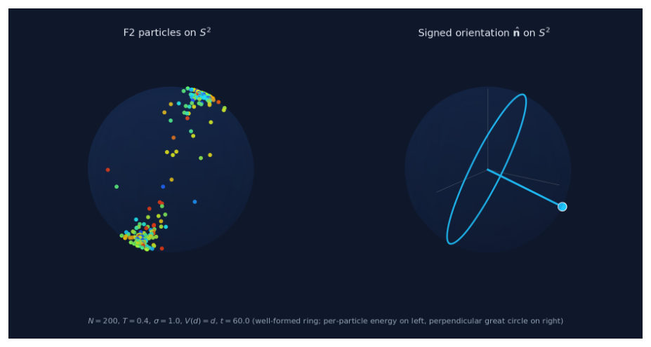
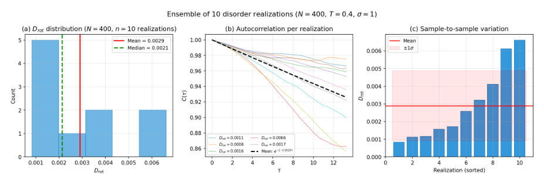
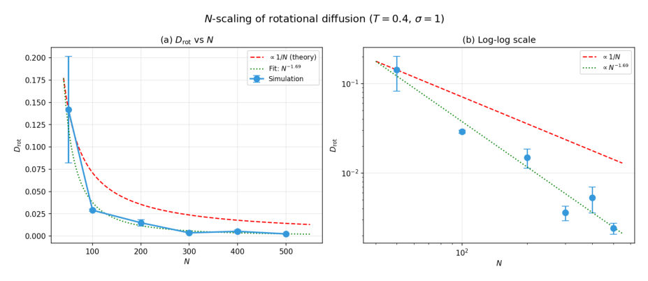
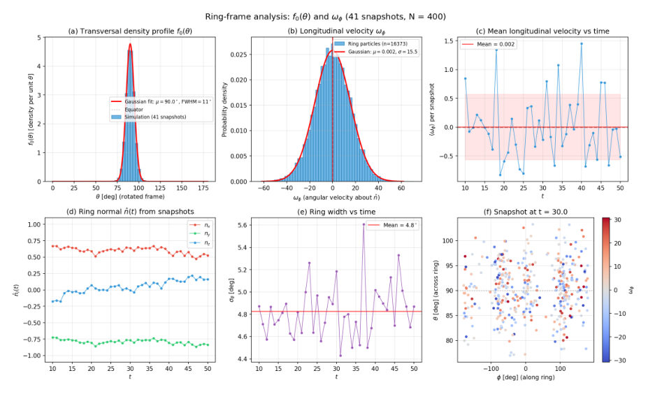
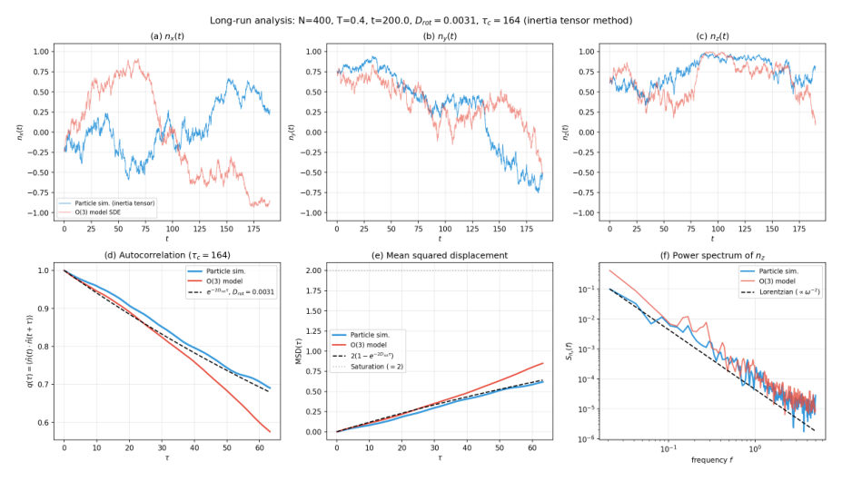
Summary. This paper derives a new statistical field theory (the F2 model) for frustrated Brownian particles on curved surfaces. It demonstrates that quenched disorder can cause particles to spontaneously concentrate on lower-dimensional manifolds, such as rings on a sphere, with dynamics governed by a non-linear sigma model. The theory is shown to be highly predictive, reproducing simulation results without adjustable parameters.
Why it may be interesting. not directly relevant
Main problem. Developing a statistical field theory to describe the large-N thermodynamic limit of Brownian particles with quenched random interactions on 2D Riemannian manifolds.
Main result. The derivation of the F2 model, a non-linear field theory that predicts adiabatic dimension reduction (e.g., particles concentrating on great-circle rings on a sphere) and identifies the low-energy dynamics as a (0+1)-dimensional non-linear sigma model on the real projective plane.
Method. The authors use the MSRJD path-integral formalism, disorder averaging via Hubbard-Stratonovich transformations, and a Born-Oppenheimer-style adiabatic approximation to reduce the many-body dynamics to an effective single-field theory.
Model / system. A system of N Brownian particles on a compact 2D Riemannian manifold subject to overdamped Langevin dynamics and quenched random pairwise interactions (spin-glass type) with various long-range potentials.
Key observables. Density field (rho), orientation vector (n), rotational diffusion coefficient (D_rot), and two-time density-density and current-current correlators.
Important parameters / regimes. Large-N limit, coupling variance (J), friction coefficient (gamma), temperature (T), and the rotational diffusion coefficient (D_rot).
Assumptions / limitations. The large-N limit, the adiabatic separation between slow orientation and fast density fluctuations, and the neglect of certain functional determinant fluctuations in the leading-order approximation.
Figures summary. The notes do not provide specific figure descriptions, but imply the presence of particle simulations showing density concentration on rings and validation of the effective theory against simulation diagnostics.
Paper structure. The paper proceeds from defining the many-body Langevin dynamics and quenched disorder, to constructing the MSRJD path integral, performing disorder averaging to derive the F2 model, applying adiabatic dimension reduction on specific manifolds like S2, and finally validating the effective theory using particle simulations.
We develop a statistical field theory that describes the large-N limit of a system of Brownian particles with quenched random pairwise interactions on a compact two-dimensional Riemannian manifold. The resulting Frustrated Fields (F2) model is a non-linear field theory for a smooth self-interacting density field $ρ$ on the manifold, with local and non-local (in space and time) self-interactions characteristic of spin-glass dynamics. Particle simulations show \emph{adiabatic dimension reduction}: on $S^2$, the density concentrates on a slowly precessing great-circle ring whose orientation is a director ($\hat{\mathbf{n}} \sim -\hat{\mathbf{n}}$, even profile). Conditioned on this simulation-supported ring saddle and on a Born-Oppenheimer separation between the slow orientation and the gapped density fluctuations, symmetry fixes the low-energy dynamics to be the nonlinear sigma model (NLSM) on the real projective plane $S^2/\mathbb{Z}_2 = \mathbb{RP}^2$ (the $\mathbb{RP}^2$ NLSM on the projective rotor space) in $(0+1)$ dimensions, governed by a single low-energy constant, the rotational diffusion coefficient $D_{\text{rot}}$. With $D_{\text{rot}}$ and the static ring profile $f_0$ measured from particle simulations, the resulting effective theory reproduces multiple independent orientation- and density-sector diagnostics with no further adjustable parameters.
Authors: Angus Mingare, Peter V. Coveney
Type: theory · Category: quantum information and computing · PDF: https://arxiv.org/pdf/2605.06579v1
Analysis basis: full PDF text, analyzed in chunks
Topic relevance: entanglement & information structure 2/5 · methods for driven-dissipative 2/5
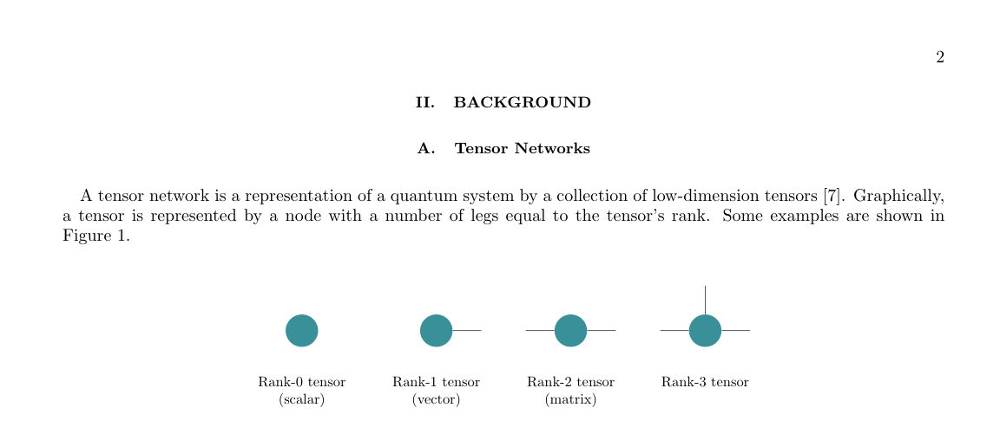
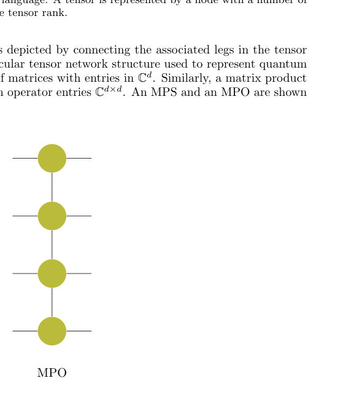
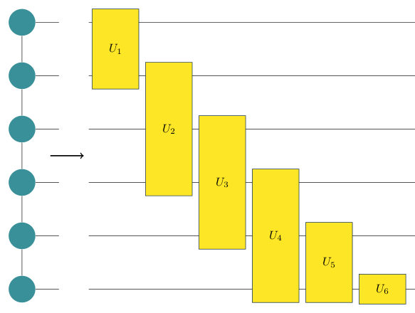
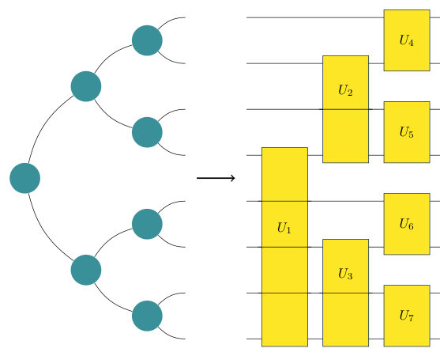
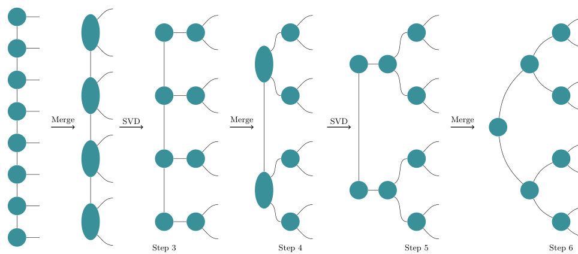
Summary. This paper introduces an analytical method to convert Matrix Product States into quantum circuits with logarithmic depth instead of linear depth. By using a tree tensor network renormalization approach, it allows for much shallower circuits that are more resilient to noise on near-term quantum hardware. The method also extends to verifying unitary operations using Matrix Product Operators.
Why it may be interesting. not directly relevant
Main problem. The high circuit depth of traditional linear-depth (staircase) mappings for loading Matrix Product States (MPS) onto quantum computers makes them impractical for noisy, near-term hardware.
Main result. The authors developed an analytical method to decompose MPS and MPO into log-depth quantum circuits using Tree Tensor Network (TTN) renormalization, enabling efficient state preparation and circuit verification.
Method. A Tree Tensor Network renormalization procedure uses iterative local merges and Singular Value Decompositions (SVD) to transform MPS into a binary tree structure, which is then mapped to quantum gates.
Model / system. The method focuses on N-qubit systems represented by Matrix Product States (MPS) and Matrix Product Operators (MPO) with a bond dimension chi.
Key observables. Circuit depth, fidelity (overlap), gate locality, and the squared overlap magnitude |
Important parameters / regimes. Circuit depth scaling (O(log N) vs O(N)), bond dimension (chi), system size (N), and noise parameter (delta).
Assumptions / limitations. The method assumes the MPS can be padded to a bond dimension of 2^k and that the unitary U has an efficient MPO representation; it also assumes a trade-off between fidelity and depth via truncation.
Figures summary. Figures illustrate tensor ranks, the structural difference between MPS and MPO, the linear depth of staircase circuits versus the log-depth of TTN, the SVD renormalization process, and performance metrics like fidelity decay and gate size saturation.
Paper structure. The paper introduces the problem of MPS loading, presents the TTN renormalization method, provides an error analysis for truncation, extends the method to MPOs for circuit verification, and demonstrates utility for device calibration.
Matrix product states provide efficient classical descriptions of quantum systems that may be useful as reference states for quantum algorithms such as quantum phase estimation and quantum-selected configuration interaction. Shallow circuit constructions for loading matrix product states onto quantum computers is necessary for this to be practical on near-term hardware. We present a decomposition of matrix product states to log-depth quantum circuits via a simple tree tensor network renormalisation procedure. Our method exposes an explicit parameter which can be used to trade a small amount of fidelity for large savings in circuit depth. We extend this decomposition to the case of matrix product operators allowing us to construct log-depth and ancilla-free circuits to calculate overlaps of the form $\left |\langleφ|U|ψ\rangle\right |^2$. In particular, we demonstrate an interpretation of these circuits as \emph{verifier circuits} with application to circuit-level device calibration.
Authors: Gen Yue, Ansi Bai, Linqian Wu, Tian Lan
Type: theory · Category: numerical methods · PDF: https://arxiv.org/pdf/2605.06661v1
Analysis basis: full PDF text, analyzed in chunks
Topic relevance: entanglement & information structure 2/5 · exotic spin models in light-matter 2/5
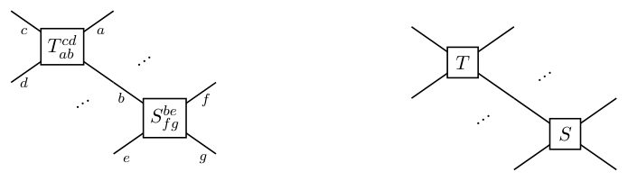
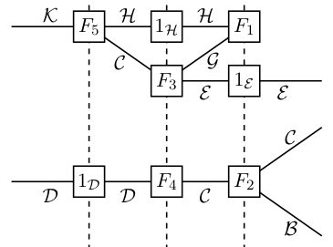
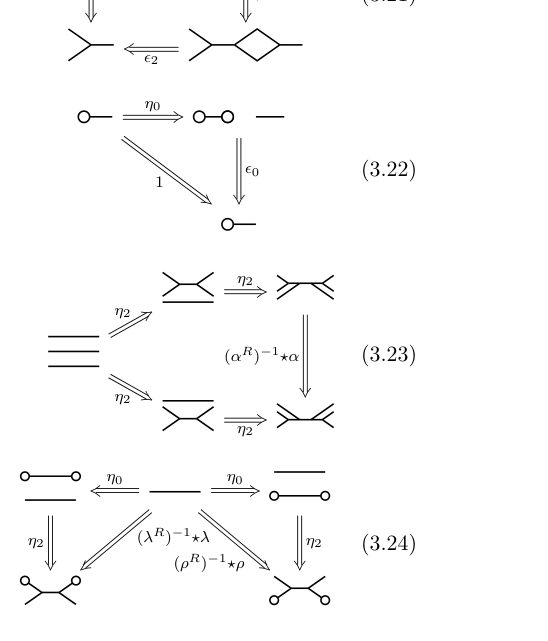
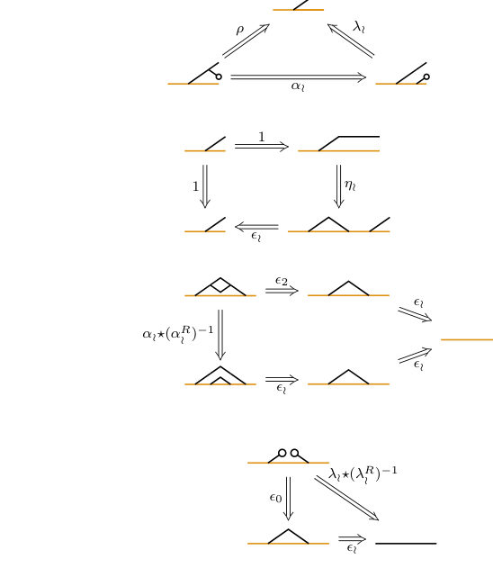
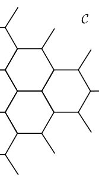
Summary. This paper introduces 'pro-tensor networks,' a mathematical generalization of tensor networks that uses category theory to study collections of many-body theories simultaneously. By replacing vector spaces with categories, the authors create a framework capable of describing topological order and generalized symmetries without being limited by standard assumptions like finiteness or semisimplicity.
Why it may be interesting. It provides a powerful new mathematical language for studying the renormalization of many-body systems and the emergence of generalized symmetries, which is highly relevant to the study of many-body dynamics and topological phases.
Main problem. The need for a rigorous mathematical framework to study the universal properties of entire collections of many-body theories (many-many-body theory) rather than individual models.
Main result. The introduction of the 'pro-tensor network,' a categorification of tensor networks using enriched category theory, which generalizes the Levin-Wen model and provides a new classification of topological excitations.
Method. The authors use enriched category theory, specifically V-profunctors (distributors) and coend calculus, to create a framework that replaces vector spaces with categories and linear maps with profunctors.
Model / system. The framework encompasses a hierarchy of models, including classical tensor networks, the Levin-Wen model (as a uniform pro-tensor network), and string-net models representing topological order.
Key observables. Topological order, generalized symmetries, and topological excitations (particles).
Important parameters / regimes. The framework specifically addresses regimes beyond the standard constraints of semisimplicity, finiteness, and rigidity.
Assumptions / limitations. The theory assumes the base category V is a cosmos (symmetric monoidal closed, complete, and cocomplete), and certain results require the category to be Cauchy complete or rigid.
Figures summary. Figure 1 shows two interpretations of classical tensor networks; Figure 2 demonstrates tensor contraction; Figure 3 illustrates the two interpretations of pro-tensor networks; later figures show commutative diagrams for probimonad axioms and module actions.
Paper structure. The paper begins by introducing the pro-tensor network and its physical motivation, followed by the mathematical construction using enriched category theory and coend calculus, then applies the framework to recover and generalize known models like Levin-Wen, and concludes with technical proofs regarding module equivalences and probimonad structures.
We introduce the pro-tensor network, a categorification of the tensor network, as a fully rigorous yet graphically transparent framework for studying the collection of many many-body theories, which we dub many-many-body theory. We provide a comprehensive toolbox for the graphical calculations using pro-tensor networks. As applications, we recover the Levin-Wen model as a "uniform" pro-tensor network and generalize a result of Kitaev and Kong by characterizing particles as modules over promonads. One can also interpret the string-net pro-tensor network as the space of symmetric tensor networks, thus our framework also applies to the study of generalized symmetry and topological holography. Notably, our generalization dispenses with the assumptions of semisimplicity, finiteness, and rigidity, potentially facilitating the exploration of many-body physics beyond these constraints.
Authors: Marcelo F. Ciappina
Type: theory · Category: other · PDF: https://arxiv.org/pdf/2605.05617v1
Analysis basis: full PDF text, analyzed in chunks
Topic relevance: Keldysh / 2PI / non-Gaussian methods 2/5 · non-equilibrium dynamics 2/5




Summary. This paper develops an analytical model for tunneling ionization in space-fractional quantum mechanics. It shows that non-local kinetic energy changes the scaling laws of ionization and significantly enhances the ionization rate compared to standard quantum mechanics. The work provides a new benchmark for studying how non-locality affects strong-field physics.
Why it may be interesting. It provides a new theoretical benchmark for non-local quantum dynamics and explores how non-quadratic kinetic energy fundamentally alters the tunneling mechanism, which is relevant to anyone studying non-local transport or fractional dynamics in atomic systems.
Main problem. The paper addresses the lack of a standard strong-field benchmark for tunneling ionization in Space-Fractional Quantum Mechanics (SFQM) and seeks to understand how non-local kinetic energy affects the tunneling exponent.
Main result. The author derives a closed-form fractional-ADK (fADK) tunneling exponent and demonstrates that decreasing the fractional order alpha enhances ionization rates due to genuine non-local transport effects.
Method. The study uses a semiclassical WKB approach to derive the analytical exponent and performs numerical simulations of the 1D time-dependent fractional Schrödinger equation using a split-operator scheme.
Model / system. A 1D model of an electron in a static electric field with a soft-core Coulomb potential, governed by a fractional Hamiltonian featuring the Riesz fractional Laplacian of order 1 < alpha <= 2.
Key observables. Tunneling ionization rate (Gamma), tunneling exponent, survival probability, and the tunneling action (slope of -ln Gamma vs 1/F0).
Important parameters / regimes. Fractional order (alpha), ionization potential (Ip), static electric field strength (F0), and the barrier-suppression threshold.
Assumptions / limitations. The analytical derivation assumes a triangular exit barrier; the model is restricted to one dimension; and the study focuses on the static-field (quasistatic) limit.
Figures summary. Figure 1 compares tunneling rates for different alpha values; Figure 4 benchmarks the 1D-TDSE against standard ADK theory; Figure 5 shows scaling for various alpha values under a fixed potential; Figure 6 compares the numerical 1D-TDFSE results against the derived fADK prediction.
Paper structure. The paper reviews conventional ADK/PPT theory, introduces the fractional Hamiltonian framework, provides the analytical derivation of the fADK exponent, presents numerical validation protocols, and concludes with a comparison of numerical results against the new theory.
Tunneling ionization in static or slowly varying electric fields is a cornerstone of strong-field physics and provides the entry point for semiclassical descriptions of above-threshold ionization and high-harmonic generation. In conventional quantum mechanics, the Perelomov--Popov--Terent'ev (PPT) theory and its Ammosov--Delone--Krainov (ADK) form yield an ionization rate whose defining feature is an exponential dependence governed by an under-barrier (imaginary-time) action. Here we develop an analytical ADK-like tunneling model within \emph{space-fractional} quantum mechanics, where the quadratic kinetic energy is replaced by the Riesz fractional Laplacian of order $1<α\le2$. Working in a static electric field in the length gauge, we derive a closed-form tunneling exponent for a triangular exit barrier. The fractional kinetic operator deforms the conventional $I_p^{3/2}$ scaling to $I_p^{1+1/α}$ and introduces a characteristic $\sin(π/α)$ factor encoding the complex-phase structure associated with nonlocal dispersion. We position this benchmark relative to prior tunneling studies in fractional quantum mechanics (primarily scattering through model barriers and fractal potentials) and provide a validation protocol for testing the exponent in time-dependent simulations of the fractional Schrödinger equation under a constant field. The result establishes a transparent reference for static-field ionization in nonlocal quantum dynamics and a baseline for strong-field approaches extensions.
Authors: Luis Colmenarez, Áron Márton, Markus Müller
Type: both · Category: quantum information and computing · PDF: https://arxiv.org/pdf/2605.06101v1
Analysis basis: full PDF text, analyzed in chunks
Topic relevance: QC/QI experiment 2/5 · quantum measurements 1/5
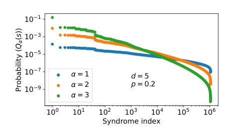
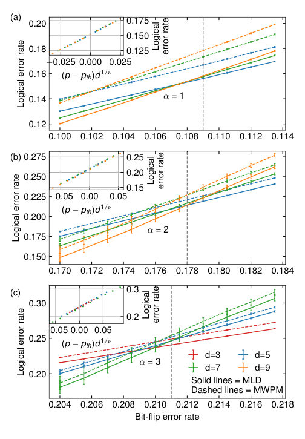
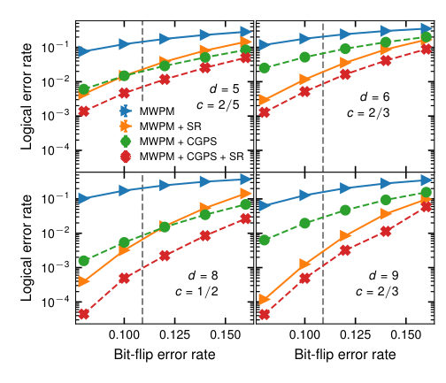
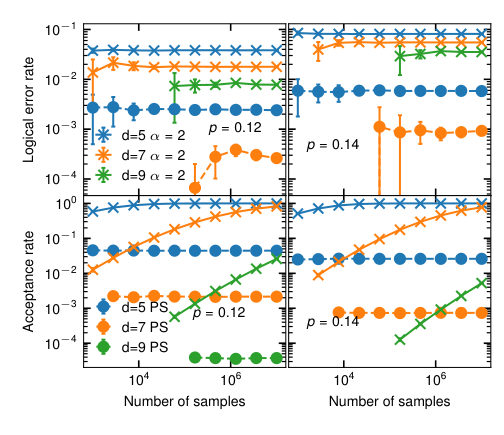
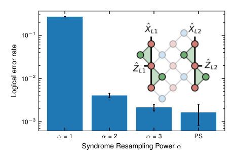
Summary. This paper presents a new method called syndrome resampling that improves quantum error correction performance by reweighting syndrome data. It works for any decoder and can significantly reduce logical error rates in both simulations and real experimental data without needing new hardware. The method effectively pushes the error correction threshold higher by focusing on the most probable error patterns.
Why it may be interesting. not directly relevant
Main problem. The difficulty of increasing quantum error correction (QEC) thresholds and reducing logical error rates without requiring additional hardware or complex, code-specific decoding modifications.
Main result. The introduction of syndrome resampling, which increases QEC thresholds and reduces logical error rates by up to four orders of magnitude in simulations and two orders of magnitude in experimental data.
Method. A decoder-agnostic method called syndrome resampling that biases syndrome averages towards more likely syndromes by resampling according to powers of the syndrome probability distribution.
Model / system. Quantum error correction codes, specifically surface codes (unrotated and rotated) and the toric code, subject to Pauli bit-flip noise.
Key observables. Logical error rate, syndrome probability distribution (SPD), Renyi Coherent Information (RCI), and threshold (p_th).
Important parameters / regimes. Resampling parameter alpha, physical error rate p, code distance d, and critical exponent nu.
Assumptions / limitations. The noise model is assumed to be Pauli noise, and the method's efficiency is limited by the sampling cost required to estimate the syndrome probability distribution.
Figures summary. Figure 1 shows the reconstruction of the modified syndrome distribution; Figure 2 displays logical error rates vs. error rates for different alpha values and shows data collapse; Figure 3 compares various decoding strategies; Figure 4 shows the evolution of error rates and acceptance rates; Figure 6 shows finite-size scaling collapse for MWPM.
Paper structure. The paper introduces the syndrome resampling method, establishes its theoretical connection to Renyi Coherent Information and phase transitions, presents numerical simulations on surface codes, demonstrates implementation with finite data and combination with post-selection, and validates the method using existing experimental QEC data.
Quantum error correction (QEC) enables fault-tolerant quantum computation but requires operating quantum hardware at physical error rates below code-dependent thresholds, which remains challenging for current devices. We introduce syndrome resampling, a general method that increases QEC thresholds of any decoder and suppresses logical errors without additional hardware, decoding modifications, or code-specific assumptions beyond syndrome statistics. The method exploits the fact that syndromes with low probability are likely to lead to logical failure, therefore biasing syndrome averages towards most likely syndromes effectively increases logical fidelities. We establish a direct connection between the Rényi coherent information (RCI) and powers of the syndrome probability distribution, showing that resampling syndromes according to these powers combined with maximum likelihood decoding (MLD) realizes a family of optimal thresholds associated with phase transitions in the RCI. Numerical simulations of surface codes demonstrate that syndrome resampling substantially increases thresholds for both optimal and suboptimal decoders and reduces logical error rates by up to four orders of magnitude in experimentally relevant regimes. We further show that syndrome resampling can be effectively implemented from finite data and combined with decoding-based post-selection to achieve additional gains. Finally, applying the method to existing experimental QEC data yields up to two orders of magnitude reduction in logical error rates without requiring additional measurements. Our results provide a practical and decoder-agnostic route to improved logical fidelities in near-term QEC experiments.
Authors: Rebecca Chang, Maureen Krumtünger, Martin Larocca, Maxwell West
Type: theory · Category: quantum information and computing · PDF: https://arxiv.org/pdf/2605.05518v1
Analysis basis: full PDF text, analyzed in chunks
Topic relevance: quantum measurements 2/5
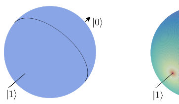
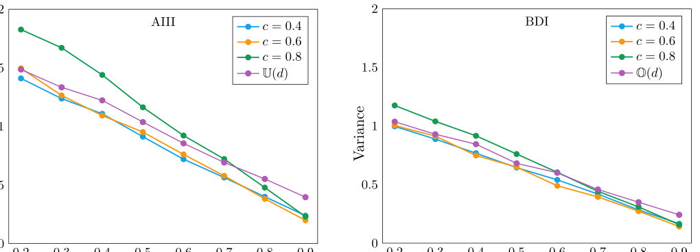
Summary. This paper generalizes the classical shadows technique by investigating measurement protocols where unitaries are sampled from compact symmetric spaces rather than just groups. It reveals that certain symmetric space protocols can outperform standard methods when estimating observables that are concentrated on the diagonal of the measurement basis.
Why it may be interesting. not directly relevant
Main problem. Extending the classical shadows framework beyond standard group-based sampling to include protocols based on compact symmetric spaces (G/K).
Main result. The authors establish a unifying theory for symmetric space shadows, showing they are invertible and can provide improved sample complexity for observables concentrated on the diagonal in certain regimes.
Method. The study utilizes representation theory, Weingarten calculus, and the study of measurement channels to evaluate integrals over symmetric spaces and analyze the variance of estimators.
Model / system. The model involves an unknown quantum state in a d-dimensional Hilbert space being reconstructed via random measurements sampled from the seven infinite families of type I compact symmetric spaces.
Key observables. Expectation values of quantum observables, specifically focusing on the variance of estimators for diagonal and off-diagonal components.
Important parameters / regimes. The dimension of the Hilbert space (d), the signature of the involution (s), and the scaling regime of the signature (s in O(1) vs s = cd).
Assumptions / limitations. The study assumes sampling is performed uniformly from the compact symmetric spaces and that the measurement basis is chosen such that involutions take standard forms.
Figures summary. Figure 1 compares probability distributions on the Bloch sphere for different ensembles; Figure 2 compares the variance of random symmetric observables across different shadow protocols.
Paper structure. The paper introduces the problem of symmetric space shadows, provides a mathematical framework using group theory and Weingarten calculus, classifies the resulting measurement channels, analyzes the variance in different scaling regimes, and concludes with performance comparisons.
Efficiently learning expectation values of unknown quantum states via classical shadows has become an important primitive in both theoretical and experimental aspects of quantum computation. Typically, classical shadow protocols involve randomised measurements induced by sampling uniformly randomly from a compact group, a situation which is now quite well understood. In this work we go beyond this standard assumption, studying the classical shadow protocols occasioned by sampling uniformly randomly from the so-called compact symmetric spaces. We uncover a unifying theory of such protocols, extending the extent to which the general theory of classical shadows is understood at a mathematical level. Interestingly, for the estimation of observables sampled from certain distributions we further find that some of these protocols allow for slight improvements in sample-complexity over existing shadow schemes.
Authors: Omri Lesser, Debanjan Chowdhury
Type: theory · Category: disordered systems and neural networks · PDF: https://arxiv.org/pdf/2605.05294v1
Analysis basis: full PDF text, analyzed in chunks
Topic relevance: Keldysh / 2PI / non-Gaussian methods 2/5
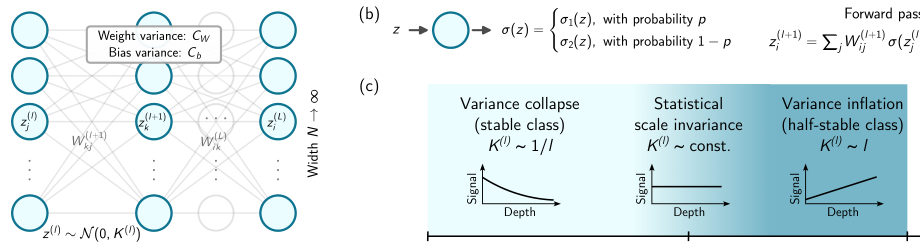
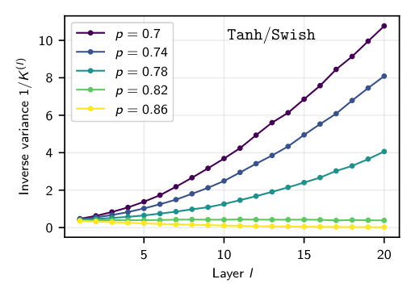
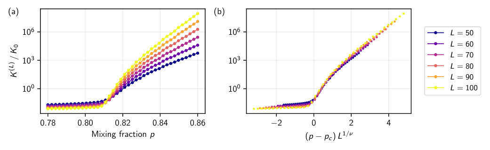
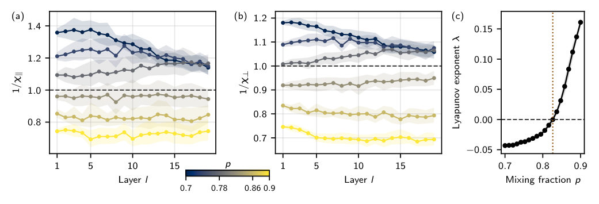
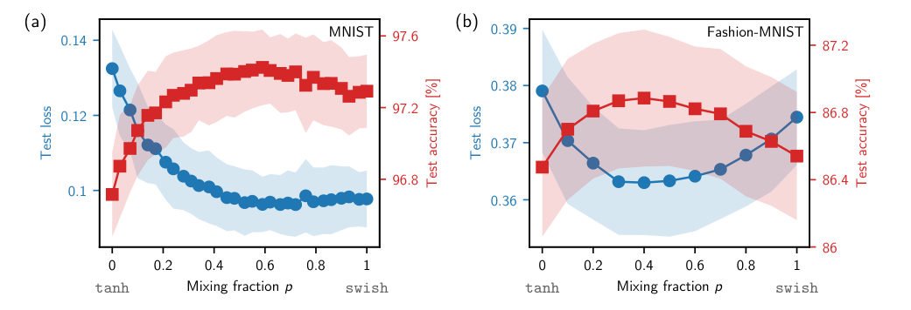
Summary. The paper shows that by randomly mixing two different smooth activation functions, one can create a continuous phase transition that achieves the benefits of scale-invariant signal propagation (like ReLU) without losing smoothness. This approach provides a controlled way to navigate neural network universality classes and improves model robustness to label noise.
Why it may be interesting. not directly relevant
Main problem. The difficulty of analytically controlling the transition between different universality classes of activation functions in deep neural networks, specifically resolving the tension between achieving scale-invariant signal propagation and maintaining function smoothness.
Main result. The discovery of a continuous phase transition in a statistical mixture of smooth activations (Tanh and Swish) that enables emergent scale-invariance and acts as a structural regularizer during training.
Method. Effective field theory and mean-field dynamics in the infinite-width limit, utilizing kernel recursion, Taylor expansions, and finite-size scaling analysis.
Model / system. Deep multilayer perceptrons (MLPs) where each neuron's activation function is drawn independently from a Bernoulli distribution (a mixture of Tanh and Swish) at initialization, creating quenched activation disorder.
Key observables. Preactivation variance propagation, parallel and perpendicular susceptibilities, Lyapunov exponents, and the stability coefficient.
Important parameters / regimes. Mixing fraction (p), network depth (L), network width (N), and initial input variance (K0).
Assumptions / limitations. The infinite-width limit (N to infinity) allows for self-averaging and Gaussian preactivations; the transition is analyzed in the context of quenched disorder.
Figures summary. Figures depict variance propagation through layers, the transition from variance-collapsing to variance-inflating regimes, the smoothness of the transition, and the non-monotonic relationship between the mixing fraction and neural network test performance/robustness.
Paper structure. The paper introduces the problem of activation universality, proposes a statistical mixture model, develops a mean-field theory to predict the critical point, verifies the transition via Lyapunov exponents and susceptibilities, and demonstrates the practical learning advantages and regularization effects through MNIST/Fashion-MNIST simulations.
Deep neural networks owe their expressive power to nonlinear activation functions. The effective field theory of signal propagation at initialization reveals a few distinct universality classes of activations that exhibit different depth scaling. Tuning across these, especially with analytical control, is an open problem. We show that a statistical mixture of activations, where each neuron independently and randomly draws its activation from a two-component distribution with mixing fraction $p$, provides a new mechanism for a continuous phase transition. Applied to a mixture of Tanh and Swish, the transition is sharp in the depth scaling of the preactivation variance, separating a variance-collapsing from a variance-inflating phase; at $p_c$, the network acquires statistical scale invariance, with depth-independent variance, without sacrificing smoothness. This resolves a longstanding tension, where scale-invariant propagation has previously required the non-smooth ReLU family, rendering such networks ill-suited to curvature-based optimizers, physics-informed architectures, and neural-network quantum states. We corroborate the transition through variance propagation, parallel and perpendicular susceptibilities, and Lyapunov exponents. Training multilayer perceptrons on real datasets reveals non-monotonic test performance as a function of $p$, with an optimum near the theoretically predicted $p_c$, confirming that the initialization-level transition has direct consequences for learned representations. The quenched activation disorder acts as a structural regularizer, suppressing memorization of corrupted labels while preserving generalization. Our framework establishes statistical activation mixtures as a controlled tool for navigating the phase diagram of deep network universality classes.
Authors: Carlos Pascual-García
Type: theory · Category: quantum information and computing · PDF: https://arxiv.org/pdf/2605.06249v1
Analysis basis: full PDF text, analyzed in chunks
Topic relevance: quantum measurements 2/5
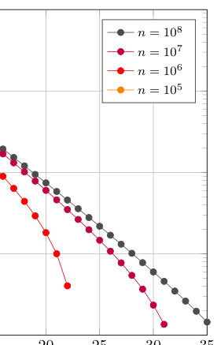
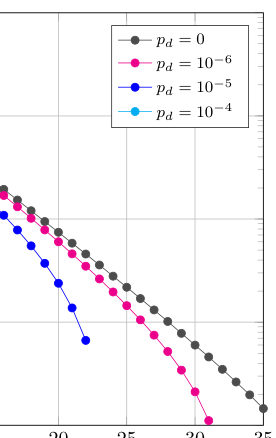
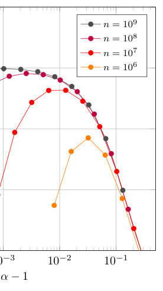
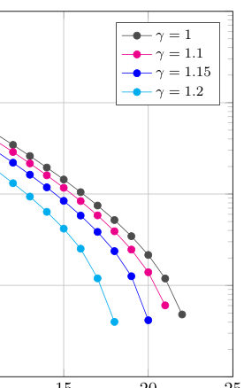
Summary. This paper provides a new security proof for DPSK quantum key distribution that works with much smaller data blocks than previously possible. By using advanced entropy accumulation and conic optimization, it proves that industrial-grade, practical QKD is achievable even with significant channel loss and experimental noise.
Why it may be interesting. This work is highly relevant to quantum optics and quantum communications as it provides a rigorous security foundation for practical, high-rate, and low-complexity photonic QKD implementations.
Main problem. Achieving finite-size general security for Differential Phase Shift Keying (DPSK) QKD without requiring extremely large block sizes or low repetition rates.
Main result. The authors demonstrate that DPSK can achieve secure key rates with block sizes as small as 10^5 signals at losses beyond 12 dB, significantly outperforming previous benchmarks.
Method. The study uses the Marginal-Constrained Entropy Accumulation Theorem (MEAT) and Rényi leftover hashing, formulated as a conic optimization problem using the Julia programming language.
Model / system. A DPSK QKD protocol where Alice sends coherent states and Bob performs threshold detection using a Mach-Zehnder interferometer, incorporating channel loss, dark counts, and modulation asymmetry.
Key observables. Secret key rate (bits per pulse), detection outcomes (clicks, double-clicks, no-clicks), and channel loss (dB).
Important parameters / regimes. Block size (n) ranging from 10^5 to 10^9, channel loss (up to 30 dB), dark count probability (pd), and asymmetry factor (gamma).
Assumptions / limitations. The security relies on a no-signaling condition between quantum signals and assumes Eve is a general adversary.
Figures summary. Figure 1 shows secret key rates vs. channel loss for various block sizes; Figure 2 shows the impact of dark count rates; Figure 3 shows the dependence on the Rényi parameter; Figure 4 shows the impact of modulation asymmetry.
Paper structure. The paper defines the DPSK protocol, establishes an operational equivalence to a simpler relativistic protocol, applies the MEAT framework with dimension reduction via squashing maps, and performs numerical optimization to derive key rates.
Differential phase shift keying (DPSK) constitutes a pathway towards practical quantum key distribution by using affordable commercial technologies, and robust theoretical foundations. Recent advances in the security of DPSK have proven its security against general adversaries, albeit requiring limitations, including strong repetition rate constraints at the security proof and costly statistical estimators. In this work, we overcome said limitations by leveraging recent techniques in variable-length general security by using entropy accumulation techniques based on Rényi leftover hashing, together with conic optimization methods. Our approach achieves secret key rates with $10^5$ signals beyond 12 dB, constituting a robust proof of the experimental implementability of industrial-grade DPSK.
Authors: Igor Halperin
Type: theory · Category: disordered systems and neural networks · PDF: https://arxiv.org/pdf/2605.05376v1
Analysis basis: full PDF text, analyzed in chunks
Topic relevance: non-equilibrium dynamics 2/5
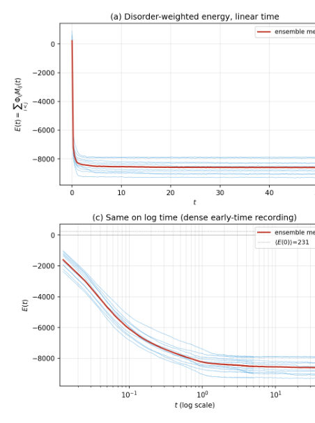
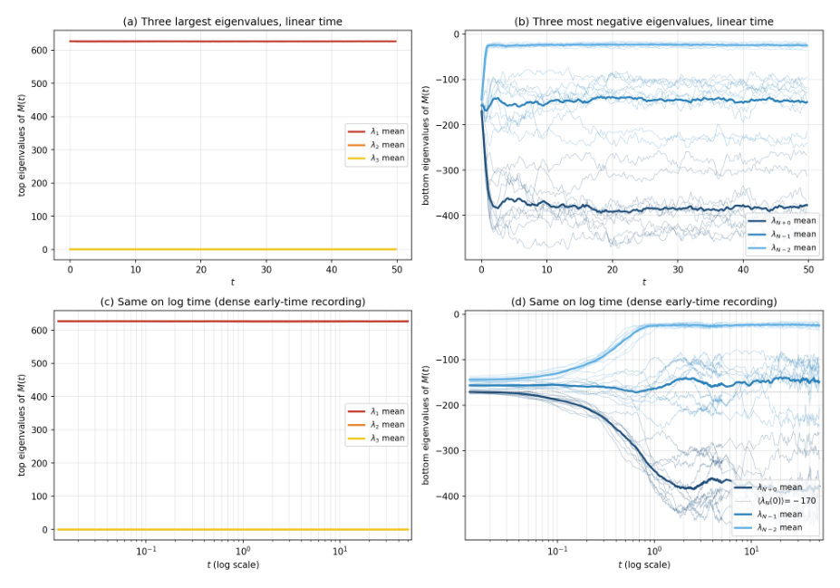
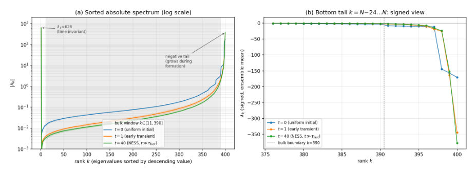
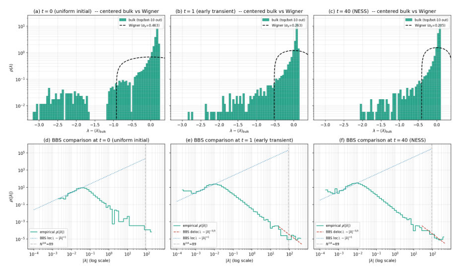
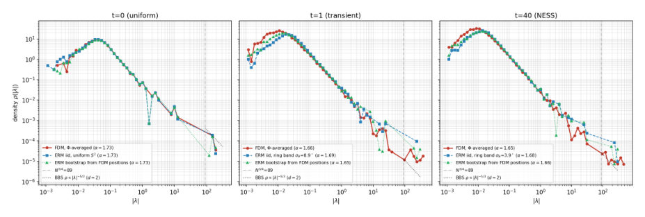
Summary. This paper introduces a framework to detect geometric transitions in a system by analyzing the time-varying spectrum of a distance matrix. It demonstrates that a collapse from a 2D sphere to a 1D ring can be identified through specific shifts in the eigenvalue distribution and rank-decay exponents. This provides a method for solving dynamical inverse problems in complex systems where only pairwise distances are observable.
Why it may be interesting. not directly relevant
Main problem. Determining if structural changes in an underlying particle configuration, such as dimensional collapse from a 2D sphere to a 1D ring, can be detected using only the time series of a distance matrix without direct access to particle positions.
Main result. The study finds that the static Bogomolny, Bohigas, and Schmit (BBS) spectral template is preserved during dynamics, but structural changes are identifiable through a redistribution of spectral mass, specifically via rank reduction in the l=1 multiplet and shifts in the rank-decay exponent.
Method. Numerical simulations of Langevin SDEs for Brownian particles on a sphere, combined with spectral analysis of the distance matrix, including MLE for power-law exponents and comparison against i.i.d. resampled ensembles.
Model / system. The Frustrated Distance Matrix (FDM) model, consisting of N Brownian particles on a 2-sphere (S2) evolving under quenched random pairwise couplings that are linear in the geodesic distances.
Key observables. Eigenvalue spectrum (top, bottom, and bulk), rank-decay exponent (beta), ring-quality diagnostic (eta), and the l=1 multiplet rank reduction.
Important parameters / regimes. System size (N), temperature (T), disorder strength (sigma), and the fast relaxation timescale (tau_fast).
Assumptions / limitations. The FDM is assumed to be a valid dynamic extension of the Euclidean Random Matrix (ERM) class, and the dynamics are modeled as overdamped Langevin processes.
Figures summary. Figure 1 shows the evolution of energy and ring-quality over time; Figure 2 tracks the evolution of the largest and most negative eigenvalues.
Paper structure. The paper introduces the FDM model, describes the particle dynamics and matrix construction, presents the numerical simulation protocol, details the spectral diagnostics for detecting ring formation, and concludes with potential applications to other inverse-problem settings.
We introduce the Frustrated Distance Matrix (FDM) model, a dynamic extension of the static distance-matrix ensemble on S^2 analyzed by Bogomolny, Bohigas, and Schmit (BBS). Its entries are pairwise geodesic distances between N Brownian particles on the sphere evolving under quenched random pairwise couplings linear in those distances. Where the static BBS theory recovers geometric information about the underlying manifold from spectra of distance matrices on i.i.d.\ samples, the time-resolved FDM spectrum carries information about structural changes of the underlying point process. The particle dynamics realize one such change: a fast collapse from a uniform configuration onto a one-dimensional ring, followed by slow rotational drift of the ring orientation; the particle-level picture provides the ground truth against which spectral diagnostics are calibrated. We find that the static BBS template is preserved at every time, with the dynamics entering as a redistribution of spectral mass within that template, sharp enough to flag ring formation. We propose self-averaging of the bulk density as the mechanism behind this preservation, verified by an i.i.d.-resample comparison, and extract a small set of spectral diagnostics of the structural change computable from the distance matrix alone. We suggest that our diagnostics can be applied in other similar inverse-problem settings: financial correlation matrices, graph and network adjacency spectra, similarity matrices in molecular dynamics, and dynamics on parameter manifolds.
Authors: Ming-Zhang Wang, Xu-Yang Hou, Hao Guo
Type: theory · Category: other · PDF: https://arxiv.org/pdf/2605.05335v1
Analysis basis: full PDF text, analyzed in chunks
Topic relevance: methods for driven-dissipative 2/5
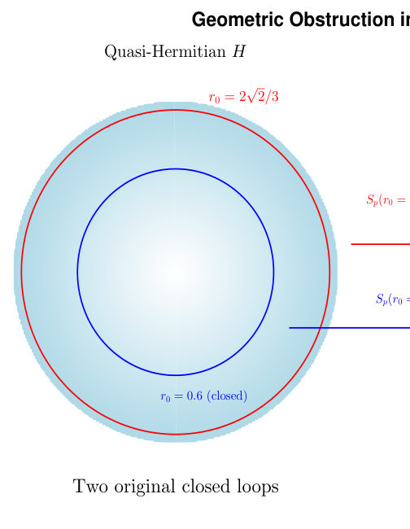
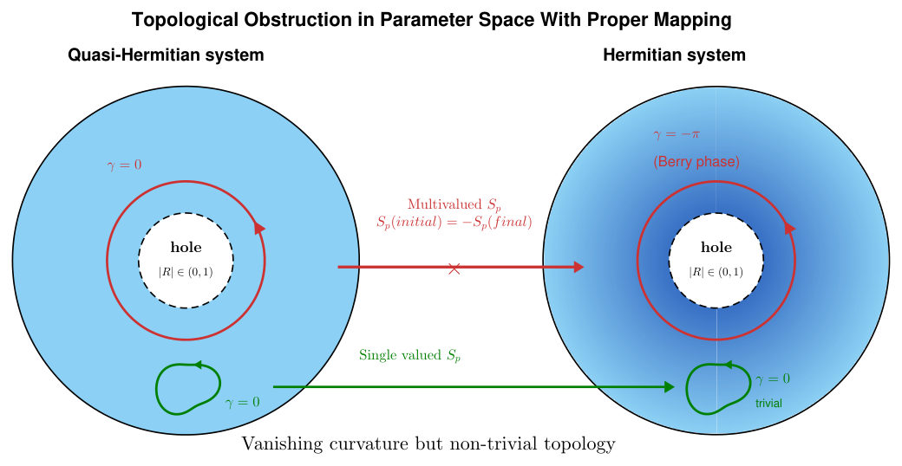
Summary. This paper identifies the geometric and topological reasons why a non-Hermitian system with a real spectrum cannot always be globally mapped to a Hermitian one. It demonstrates that even if a local mapping exists, curvature and non-trivial loops in parameter space can prevent a consistent global description. This establishes a foundation for understanding the persistence of intrinsic non-Hermitian features.
Why it may be interesting. This is highly relevant for researchers in open quantum systems and non-Hermitian physics, as it provides a fundamental mathematical framework for understanding when non-Hermitian dynamics can be truly treated as equivalent to standard Hermitian dynamics.
Main problem. The paper investigates the conditions under which a quasi-Hermitian quantum system can be globally and dynamically mapped to an equivalent Hermitian system via a similarity transformation.
Main result. The authors identify two distinct obstructions to global Hermitianization: geometric obstructions arising from non-zero gauge curvature and topological obstructions arising from non-trivial holonomies (Wilson loops) in the parameter space.
Method. The study employs a gauge theory approach, using differential geometry to analyze the metric-induced gauge connection, curvature, and Wilson loops to determine the integrability of the similarity transformation.
Model / system. The study focuses on finite-dimensional quasi-Hermitian quantum systems (including PT-symmetric ones) with a real energy spectrum, characterized by a parameter-dependent Hamiltonian H(R) and a positive-definite metric operator eta(R).
Key observables. The Berry phase (and its mismatch between quasi-Hermitian and Hermitian descriptions), gauge curvature (F_G), and the Wilson loop (W(C)).
Important parameters / regimes. External parameters R defining the system; the regime of positive-definite metric operators and entirely real energy spectra.
Assumptions / limitations. The energy spectrum of the Hamiltonian is assumed to be entirely real, and the metric operator is assumed to be positive-definite.
Figures summary. Figure 2 illustrates a topological obstruction, showing how loops enclosing a hole in parameter space result in different Berry phases compared to loops that avoid the hole.
Paper structure. The paper defines the framework of quasi-Hermitian mechanics, establishes the criteria for dynamical compatibility, classifies geometric and topological obstructions using gauge theory, and provides three illustrative examples (integrable, geometric obstruction, and topological obstruction).
Quasi-Hermitian quantum systems, including $\mathcal{PT}$-symmetric ones, can be mapped to equivalent Hermitian systems via a similarity transformation that redefines the inner product with a positive-definite metric operator. Although an instantaneous algebraic Hermitianization can be obtained locally from a positive metric operator, a stronger requirement is needed for dynamical equivalence: the similarity transformation must be proper, globally single-valued, and compatible with the modified quasi-Hermitian Schrodinger equation. We identify two distinct obstructions: geometric obstructions arising from the curvature of a metric-induced connection, and topological obstructions originating from non-trivial holonomies around non-contractible loops in parameter space. We derive explicit criteria for these obstructions and illustrate them with concrete examples. Our results establish a geometric and topological foundation for the Hermitianization of quasi-Hermitian systems, clarifying when they can be globally reduced to Hermitian ones and when intrinsic non-Hermitian features persist.
Authors: Simon Burton, Hussain Anwar
Type: theory · Category: quantum information and computing · PDF: https://arxiv.org/pdf/2605.06251v1
Analysis basis: full PDF text, analyzed in chunks
Topic relevance: entanglement & information structure 2/5
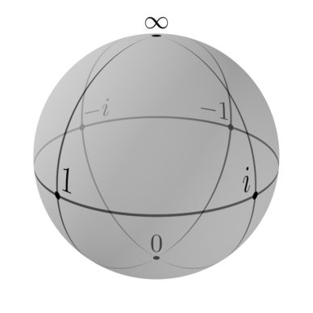
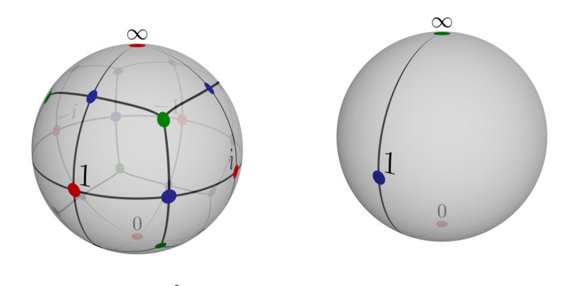
Summary. This paper introduces 'Meromorphic Quantum Computing,' a framework that replaces standard Hilbert space vectors with projective points to eliminate global phase. By treating quantum decoders as meromorphic functions, the authors provide a new algebraic method to calculate how effectively quantum codes can suppress coherent errors and distill magic states.
Why it may be interesting. not directly relevant
Main problem. The paper seeks to reformulate the kinematic axioms of quantum mechanics and quantum error correction using projective geometry and meromorphic functions instead of standard Hilbert space vectors.
Main result. The authors demonstrate that quantum decoders for stabilizer and CSS codes can be expressed as multivariate meromorphic functions, which allows for characterizing the suppression of coherent errors and the distillation of magic states via the properties of stationary points.
Method. The framework uses projectivization, the Segre embedding, and the ZX-calculus to map linear operators to rational functions, applying algebraic geometry tools like the Riemann-Hurwitz theorem and weight enumerators.
Model / system. The study focuses on finite-dimensional complex vector spaces, specifically qubits modeled as the Riemann sphere, and quantum error-correcting codes such as the Shor, Steane, and [[5, 1, 3]] codes.
Key observables. The degree of stationary points in the meromorphic decoder, the r-polynomial roots, and the order of coherent error suppression.
Important parameters / regimes. The code parameters [n, k, d], the degree of the meromorphic decoder, and the error scales (e.g., O(epsilon^2) or O(epsilon^3)).
Assumptions / limitations. The analysis is primarily restricted to finite-dimensional spaces, pure states, and the univariate case (k=1), and it focuses on coherent operations.
Figures summary. Figure 1 shows two ways to label qubit states (Riemann sphere vs. Bloch octahedron); Figure 2 illustrates Klein's octahedral function mapping tiles on the Riemann sphere.
Paper structure. The paper begins by establishing the projective kinematic axioms, moves to the mathematical framework of projectivization and the ZX-calculus, then applies these tools to analyze the properties and error-suppression capabilities of specific quantum error-correcting codes.
We consider the kinematic axioms of quantum mechanics projectively. Instead of normalized (pure) states up to global phase, states become one-dimensional subspaces of vector spaces. This process of projectivization is functorial and lax monoidal. For qubits it identifies the Bloch sphere with the Riemann sphere. We interpret a fragment of the ZXW-calculus projectively and thereby provide an alternate derivation of the arithmetic GHZ/W-calculus of Coecke et al. We find meromorphic functions that characterize the coherent behaviour of circuits for logical state preparation of quantum codes and magic state distillation.
Authors: Tomer Berghaus, Touvia Miloh, Gregory Ya. Slepyan
Type: theory · Category: other · PDF: https://arxiv.org/pdf/2605.05785v1
Analysis basis: full PDF text, analyzed in chunks
Topic relevance: correlated / nonlocal dissipation 2/5
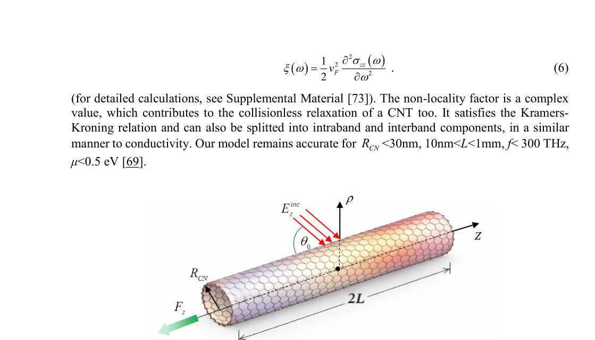
Summary. This paper provides a new theory for the optical forces acting on carbon nanotubes, specifically highlighting how nonlocal conductivity enables an 'optical pulling' effect. By accounting for edge effects and spatial dispersion, the authors show that the force can become negative, offering new insights into the optomechanical control of nanotubes.
Why it may be interesting. The discovery of an optical pulling force arising from spatial dispersion is highly relevant to quantum optics and optomechanics, as it provides a mechanism for light-induced manipulation of low-dimensional nanostructures.
Main problem. Developing a theoretical framework to describe the optical force on finite-length carbon nanotubes (CNTs) by accounting for nonlocal conductivity and edge effects.
Main result. The study demonstrates that nonlocality in conductivity leads to an 'optical pulling' effect (negative axial force) in certain frequency regimes, a phenomenon that vanishes in the local conductivity limit.
Method. The authors employ an integral-equation-based approach using the Maxwell Stress Tensor and a Fredholm integral equation of the second kind to solve for surface current density and electric fields.
Model / system. A finite-length, cylindrical, zigzag carbon nanotube (m, 0) modeled as a 1D conductor using a pseudo-spin electron liquid model and the Kubo formalism.
Key observables. Axial component of the optical force (pushing vs. pulling), surface current density, and axial electric field.
Important parameters / regimes. Frequency (THz to visible), electrochemical potential (mu), CNT length (L), radius (R), and the nonlocality parameter (xi).
Assumptions / limitations. Low temperature (collision-free electron motion), zero-temperature approximation, and a Taylor series expansion of spatial dispersion truncated at the first-order term.
Figures summary. Fig 1: Schematic of CNT under oblique wave incidence; Fig 2: Nonlocal parameter and conductivity vs frequency; Fig 3: Optical force comparison (numerical, analytical, local, non-local); Fig 4: Force dependence on electrochemical potential; Fig 5: Force dependence on CNT length in different frequency regimes.
Paper structure. The paper begins with the derivation of nonlocal conductivity from a Hamiltonian/Liouville approach, moves to the construction of the electromagnetic integral equations for the Hertz vector, presents numerical and analytical solutions for the optical force, and concludes with a comparison of local vs. non-local regimes.
We develop a new theory of an optical force exerted on a carbon nanotube (CNT) with a nonlocal conductivity. The optical force is expressed in terms of the surface current density and the axial electric field on the CNT surface. To determine these quantities, we employ an integral-equation-based approach in terms of the current density. The analysis is constructed for a finite-length cylindrical CNT by rigorously accounting for edge effects. In addition to numerical solutions of the integral equation, we obtain an approximate analytical expression for the optical force acting on the CNT, which shows good agreement with numerical simulations. We also demonstrate the existence of some frequency ranges in which the optical force becomes negative, corresponding to the optical pulling effect. Such a pulling behavior is shown to originate from the nonlocality of the conductivity and to vanish in the local limit. This work advances theoretical understanding of optomechanical interactions in finite-length low-dimensional conductors and clarifies the role of spatial dispersion in the emergence of optical pulling forces.
Authors: Francesco Benini, Ohad Mamroud, Tomas Reis, Marco Serone
Type: theory · Category: statistical mechanics · PDF: https://arxiv.org/pdf/2605.05307v1
Analysis basis: full PDF text, analyzed in chunks
Topic relevance: Keldysh / 2PI / non-Gaussian methods 2/5
Summary. This paper provides a complete description of the crystalline phase in the O(2N) Gross-Neveu model at finite density. By reconciling perturbative, semiclassical, and exact integrable methods, it identifies the specific dynamical scales that govern the physics of the inhomogeneous vacuum. This resolves previous discrepancies in the scaling of nonperturbative effects known as the renormalon puzzle.
Why it may be interesting. The study of inhomogeneous phases and the emergence of new dynamical scales in a relativistic model provides deep insights into the stability of vacuum configurations and the complex phase structures found in many-body systems.
Main problem. The paper aims to characterize the phase diagram and crystalline (inhomogeneous) phases of the O(2N) Gross-Neveu model at finite density, specifically resolving the 'renormalon puzzle' regarding fractional powers in the free energy expansion.
Main result. The authors identify two new dynamically generated scales, Lambda_n and Lambda_c, which govern the mass gaps of neutral and charged excitations in the inhomogeneous phase, thereby providing a consistent unified picture across perturbative, semiclassical, and integrable approaches.
Method. The study employs a combination of perturbative QFT (1-loop RG flow), semiclassical large N analysis (solving saddle-point equations), and integrability techniques (Bethe Ansatz and transseries expansion).
Model / system. The O(2N) Gross-Neveu model in two spacetime dimensions, consisting of N massless Dirac fermions with four-fermion interactions and a chemical potential applied to a subset of the fermions.
Key observables. Free energy, chiral condensate profile, mass gaps of neutral and charged excitations, and the spectrum of asymptotic states.
Important parameters / regimes. Number of fermion flavors N, number of charged fermions a, chemical potential h, coupling constant g^2, and the dynamically generated scales Lambda, Lambda_n, and Lambda_c.
Assumptions / limitations. The analysis focuses on zero temperature (T=0), assumes a specific range for the number of charged fermions (1 <= a <= N-2), and utilizes 1-loop approximations for the perturbative RG flow.
Figures summary. Figure 1 shows a schematic of the RG flow at finite density illustrating the breakdown of perturbation theory; Figure 2 displays the five 1-loop Feynman diagrams contributing to the four-point function.
Paper structure. The paper introduces the problem of the crystalline phase, presents a perturbative analysis of the beta function and scale emergence, follows with a semiclassical large N analysis of the condensate profile, and concludes with an exact treatment using integrability and the Bethe Ansatz.
We study the crystalline phase of the $O(2N)$ Gross--Neveu model with a chemical potential for $a \leq N-2$ of the fermions. We analyze the problem in three independent ways: using perturbative QFT methods, a semiclassical large $N$ analysis, and integrability techniques (both at finite and large $N$). The resulting picture is consistent across all three approaches: at sufficiently large chemical potential $h$, an inhomogeneous phase emerges in which $a$-particle bound states condense and which, at large $N$, corresponds to a periodically oscillating chiral condensate. In this phase, the usual dynamically generated scale $Λ$ is replaced by two new dynamically generated scales $Λ_{\rm n}$ and $Λ_{\rm c}$. These two scales govern the multiple nonperturbative effects in the theory, corresponding in particular to the mass gaps of neutral and charged excitations on top of the inhomogeneous vacuum, respectively. They also control the nonperturbative corrections to observables such as the free energy and provide the parameters characterizing the oscillatory profile of the mean field at large $N$. In this paper, we provide the necessary details of each of the three methods, thereby complementing the results announced in a previous, shorter publication.
Authors: Pierre-Antoine Graham, Filippo Gaggioli, Liang Fu
Type: theory · Category: strongly correlated electrons · PDF: https://arxiv.org/pdf/2605.06302v1
Analysis basis: full PDF text, analyzed in chunks
Topic relevance: Frenkel-Kontorova 2/5
Summary. This paper provides the theoretical foundation for the existence of an electronic quasicrystal in twisted bilayer electron systems. It shows that while classical energy favors a honeycomb lattice, quantum zero-point fluctuations stabilize a 30-degree twisted quasicrystalline state. This establishes a new regime of many-body physics where quantum motion drives structural order.
Why it may be interesting. The discovery of a quantum-stabilized, non-periodic phase driven by zero-point motion provides a new mechanism for spontaneous moir\2019e physics and could be extended to bosonic systems like dipolar gases.
Main problem. Determining the physical origin and stability of the previously discovered electronic quasicrystal phase in twisted bilayer electron systems.
Main result. The authors demonstrate that quantum fluctuations (zero-point energy) stabilize the 30-degree twisted quasicrystalline ground state over the classically preferred honeycomb configuration.
Method. The study uses an analytical framework to calculate zero-point energy corrections by expanding the Hamiltonian to quadratic order and employs commensurate approximants to study incommensurate twist angles.
Model / system. A bilayer system of spin-polarized electrons in wide semiconductor quantum wells, modeled by a 2D Hamiltonian with Coulomb interactions between two layers separated by distance ts.
Key observables. Zero-point energy (ZPE), density of states (DOS) of collective modes, normal mode spectrum (acoustic/optical modes), and interlayer structure factor.
Important parameters / regimes. Electron density (rs), layer separation ratio (ts/rs), twist angle (theta), and the Moir\2019e modulation scale.
Assumptions / limitations. Use of commensurate approximants to represent incommensurate states, harmonic approximation for calculating normal mode frequencies, and neglecting exponentially suppressed reciprocal lattice shells.
Figures summary. Figure 1 shows the bilayer setup and the 30-degree twist; Figure 2 compares the normal mode spectrum and DOS for honeycomb vs. quasicrystal; Figure 3 shows ZPE differences and energy landscapes.
Paper structure. The paper introduces the electronic quasicrystal, develops an analytical framework for zero-point energy, compares classical vs. quantum energy landscapes, analyzes the role of lattice relaxation, and discusses the stability and phase transitions of the system.
The strongly correlated phases of the homogeneous electron gas constitute the vocabulary of many-body condensed matter physics and find a natural realization in semiconductors. In this setting, recent neural-network variational Monte Carlo calculations discovered an unexpected quantum phase of matter in wide quantum wells: an electronic quasicrystal formed by a bilayer Wigner crystals with a 30-degrees twist. This state defies classical expectations and emerges in a regime dominated by quantum fluctuations. Here, we develop an analytical framework to reveal its origin. By computing zero-point energy corrections to bilayer Wigner crystal configurations, we show that quantum fluctuations qualitatively reshape the energetic landscape, destabilizing the classical honeycomb state and selecting the 30-degrees quasicrystalline ground state over a broad parameter range. Our results identify zero-point motion as the mechanism stabilizing the electronic quasicrystal and establish a route to spontaneous moiré physics driven by many-body quantum effects.
Authors: Alessio Paviglianiti, Matteo Seclì, Emanuele Tirrito, Vincenzo Savona
Type: theory · Category: quantum information and computing · PDF: https://arxiv.org/pdf/2605.05347v1
Analysis basis: full PDF text, analyzed in chunks
Topic relevance: entanglement & information structure 2/5
Summary. This paper connects the classical difficulty of factoring to the quantum resource requirements of Shor's algorithm. It proves that the amount of 'magic' or non-stabilizerness generated is directly tied to the size of the period being found. This provides a new, resource-based metric for understanding the complexity of quantum algorithms beyond simple gate counts.
Why it may be interesting. not directly relevant
Main problem. The paper seeks to quantify the 'true cost' of Shor's algorithm by linking the generation of non-stabilizerness (magic) to the number-theoretic complexity of the factoring task.
Main result. The authors establish a direct correlation between the period $r$ and the amount of magic generated, showing that $M_2$ scales with $\log r$ and that the algorithm's success depends on preserving this quantum resource.
Method. The study uses an analytic theory based on the Stabilizer Renyi Entropy (SRE) and the stabilizer formalism, complemented by numerical simulations of the quantum circuit and stochastic sampling of Pauli strings.
Model / system. The system is the Shor's factoring algorithm, specifically the order-finding routine involving a $t$-step semi-classical Quantum Fourier Transform (QFT) and modular exponentiation on an $n$-qubit register.
Key observables. Magic (non-stabilizerness) quantified via Stabilizer Renyi Entropy ($M_2$), algorithmic success rate ($S$), and the period ($r$).
Important parameters / regimes. The period $r$ (factored into $2^k$ and $ ilde{r}_{odd}$), circuit depth $ au$, and the number of qubits $L$.
Assumptions / limitations. The phases in the quantum superposition are treated as pseudo-random variables to apply the Central Limit Theorem, and the bitstring distribution is assumed to be uniform for the analytic derivation.
Figures summary. Figure 1 provides a conceptual link between magic, number-theoretic complexity, and success; Figure 2 shows the Shor's circuit structure; Figure 3 illustrates the temporal evolution of magic (ramp, plateau, growth) and its scaling; Figure 5 shows the correlation between the decay of success probability and the magic plateau length.
Paper structure. The paper introduces the problem of quantifying quantum resources, develops an analytic theory for magic evolution in Shor's algorithm, identifies three temporal regimes of SRE growth, demonstrates the link between number-theoretic difficulty and magic, and concludes by positioning magic as a diagnostic tool for algorithmic complexity.
The execution cost of quantum algorithms is typically quantified through asymptotic gate counts and qubit register sizes, yet these metrics do not directly capture which genuinely quantum resources, and in what amount, must be created and maintained for the computation to succeed. The systematic quantification of such information-theoretic requirements in quantum computing protocols remains an extremely challenging open problem, despite their direct role in establishing quantum advantage. To address this gap, we investigate the generation of non-stabilizerness (or magic), one of the key resources, in the paradigmatic Shor's factoring algorithm, revealing a deep connection between intrinsic quantum complexity and the computational hardness of the underlying number-theoretic problem. By developing an explicit analytic theory, we demonstrate the fundamental role of magic in the successful execution of the algorithm, and show that Shor's routine maximally exploits the quantum resource in practically relevant regimes. Our findings create a concise conceptual link between the classical algorithmic difficulty of a task and the non-stabilizer price to solve it on quantum hardware, complementing standard circuit-cost analyses with a resource-based metric that is naturally aligned with the real bottlenecks of fault-tolerant quantum computing.
Authors: Mohadeseh Azari, Anoosha Fayyaz, Amy Babay, David Tipper, Prashant Krishnamurthy, Kaushik Seshadreesan
Type: theory · Category: quantum information and computing · PDF: https://arxiv.org/pdf/2605.05369v1
Analysis basis: full PDF text, analyzed in chunks
Topic relevance: entanglement & information structure 2/5
Summary. This paper quantifies the resources needed to maintain high-fidelity entanglement across multi-hop quantum networks. It demonstrates that using higher-order multi-copy purification protocols can drastically reduce the number of required entanglement copies, making large-scale quantum data centers more practically feasible.
Why it may be interesting. not directly relevant
Main problem. Determining the minimum number of raw entanglement copies (copy budget) required to achieve hop-independent fidelity in quantum data center networks, specifically to recover link-level quality despite degradation from multi-hop entanglement swapping.
Main result. Multi-copy (r-to-1) purification protocols, such as the Jansen family, are significantly more efficient than the standard BBPSSW protocol, reducing the median copy budget from 268 to 30 at a 70% success threshold and expanding the feasible operating region.
Method. The authors use a topology-independent black-box model and exact dynamic programming to compute the success probability of an 'all-in' recursive purification schedule, combined with a numerical search to find the optimal protocol configuration.
Model / system. A quantum data-center network model where elementary links are represented as Werner states with parameter w0, and end-to-end states are produced via ideal entanglement swapping over a path of length l.
Key observables. Werner parameter (fidelity), success probability (P_succ), and the minimum required raw-copy budget (n0).
Important parameters / regimes. w0 (link quality), l (path length/hops), p_th (success probability threshold), and r (purification block size).
Assumptions / limitations. Assumes ideal entanglement swapping without additional noise, ideal local operations during purification, no memory decoherence, and a 'swap-then-purify' abstraction.
Figures summary. Figure 1 shows the three-stage network process; Figure 2 compares output quality vs. success probability; Figure 3 presents heatmaps of the resource landscape (copy budget) over path length and link quality; Figure 4 shows the optimal recursion depth across different regimes.
Paper structure. The paper introduces the problem of hop-independent fidelity, defines a black-box network model, compares BBPSSW and Jansen purification protocols using dynamic programming, presents numerical results on resource scaling and efficiency, and concludes with implications for quantum data center architecture.
Quantum data-center networks must distribute entanglement between QPUs over paths whose length grows with system scale, but each entanglement-swapping step reduces the quality of the raw end-to-end state. Topology, multiplexing, and repeated connection attempts can increase the number of raw end-to-end copies available for a request, yet they do not answer the central resource question: whether those copies are sufficient to remove, via entanglement purification, the fidelity loss caused by multi-hop distribution. We study this question through a topology-independent black-box model of the network. Each elementary link is modeled as a Werner state with parameter $w_0$, so ideal swapping over an $\ell$-link path produces equal-quality raw copies with Werner parameter $w_0^\ell$; purification succeeds if it outputs at least one state with Werner parameter at least $w_0$ with probability at least $p_{\mathrm{th}}$. We compare recursive BBPSSW purification with higher-order $r$-to-$1$ bilocal-Clifford purification protocols of Jansen \emph{et al.}, using an all-in recursive schedule whose success probability is computed by exact dynamic programming. The resulting resource landscapes show a threshold structure governed by the Werner entanglement condition $w_0^\ell>1/3$ and demonstrate that multi-copy purification substantially improves both feasibility and copy efficiency. Across the evaluated grid, the Jansen family requires fewer copies than BBPSSW at more than $96\%$ of shared feasible points; at $p_{\mathrm{th}}=0.70$, the median copy budget drops from $268$ to $30$. These results provide a quantitative purification-resource benchmark for assessing whether future quantum data-center architectures can practically support hop-independent end-to-end entanglement quality.
Authors: Weiliang Yao, Matthew B. Stone, Colin L. Sarkis, Yi Li, Ruixian Liu, Xingye Lu, Pengcheng Dai
Type: experiment · Category: strongly correlated electrons · PDF: https://arxiv.org/pdf/2605.06291v1
Analysis basis: full PDF text, analyzed in chunks
Topic relevance: spintronics-quantum-optics interface 2/5
Summary. This paper provides direct experimental evidence for the topological winding feature and a Dirac gap in the magnon spectrum of the 2D magnet CrI3. By using high-quality crystals and neutron scattering, the authors also demonstrate how magnon-magnon interactions drive a T^2-renormalization of the spectrum at higher temperatures. This work consolidates the understanding of topological spin excitations in van der Waals materials.
Why it may be interesting. not directly relevant
Main problem. The study aims to resolve the experimental signature of the magnon winding feature around the K-point in CrI3 and understand the thermal evolution of the magnon spectrum.
Main result. The researchers directly observed the magnon winding feature and confirmed a ~2 meV Dirac gap, while also identifying a T^2-renormalization of magnon energy due to magnon-magnon interactions.
Method. Inelastic Neutron Scattering (INS) was performed on high-quality CrI3 single crystals using the SEQUOIA spectrometer at Oak Ridge National Laboratory.
Model / system. The system is CrI3, a two-dimensional honeycomb lattice van der Waals ferromagnet that hosts topological and Dirac magnons.
Key observables. Magnon winding feature, magnon energy gap, magnon dispersion, and temperature-dependent magnetization and Bragg intensity.
Important parameters / regimes. Tc = 61.6 K, Dirac gap of ~2 meV centered at 12 meV, and temperature range from 5 K to 85 K.
Assumptions / limitations. The observation assumes that the improved sample quality (reduced mosaic spread) is sufficient to resolve subtle momentum-dependent signatures.
Figures summary. Fig 1 shows crystal structure and sample preparation; Fig 2 presents the INS-measured spin wave spectrum, the Dirac gap, and the winding angle; Fig 3 illustrates the transition from sharp to overdamped modes with temperature; Fig 4 quantifies thermal renormalization and peak broadening.
Paper structure. The paper introduces the material and problem, describes the sample growth and experimental setup, presents the observation of the winding feature and Dirac gap, details the temperature-dependent evolution of magnons, and concludes with the implications for topological magnetism.
Two-dimensional honeycomb lattice ferromagnet chromium tri-iodide (CrI$_3$) has attracted tremendous interest because it retains ferromagnetism down to the monolayer limit and hosts intriguing topological magnons. As a prototypical van der Waals magnet, CrI$_3$ provides an ideal platform for exploring the interplay between reduced dimensionality, magnetic order, and nontrivial spin excitations. Here, using inelastic neutron scattering together with improved sample quality, we uncover the magnon winding feature around the $K$-point of the hexagonal Brillouin zone, a key signature of Dirac magnons. In addition, we find that the magnon energy follows a $T^2$-renormalization behavior at elevated temperatures, consistent with magnon-magnon interactions. These results provide previously missing information on the magnon spectrum of CrI$_3$ and further consolidate the topological nature of its spin excitations.
Authors: Ben Foxman, Barak Nehoran, Yongshan Ding
Type: theory · Category: quantum information and computing · PDF: https://arxiv.org/pdf/2605.05337v1
Analysis basis: full PDF text, analyzed in chunks
Topic relevance: entanglement & information structure 1/5
Summary. The paper presents an efficient quantum algorithm to implement a Quantum Fourier Transform for a class of semisimple diagram algebras. By using a unitary approximation valid in the large-d limit, the authors overcome the non-unitarity of these algebras, offering a path toward new quantum algorithms for problems involving Schur-Weyl duality and statistical mechanics.
Why it may be interesting. This work provides a powerful new algorithmic primitive (QFT for semisimple algebras) that could potentially generalize the Hidden Subgroup Problem and enable efficient computation of complex representation-theoretic multiplicities used in many-body physics.
Main problem. Generalizing the Quantum Fourier Transform (QFT) from finite groups to finite-dimensional semisimple algebras, specifically addressing the challenges of non-unitarity and non-orthogonality in diagram algebras.
Main result. The development of an efficient quantum algorithm with polylogarithmic gate complexity that provides a unitary approximation of the QFT for partition, Brauer, and walled Braver algebras.
Method. A recursive approach using a modified separation of variables (double transversal factorization) and unitary embeddings to approximate the non-unitary Fourier transform.
Model / system. Finite-dimensional semisimple diagram algebras, including the Partition algebra P_n(d), Brauer algebra B_n(d), and walled Brauer algebra B_{r,s}(d), which are linked to Schur-Weyl duality.
Key observables. Gate complexity, error bounds (in terms of d and epsilon), and the preservation of the propagating number in diagrams.
Important parameters / regimes. The dimension parameter d (requiring large d for unitarity), the algebra rank n, and the error tolerance epsilon.
Assumptions / limitations. The algorithm assumes d is sufficiently large to ensure the Fourier basis is approximately orthonormal and that certain alternate embeddings can be implemented unitarily.
Figures summary. Figure 1 shows diagram multiplication in the symmetric group; Figure 2 illustrates basis elements for partition, Brauer, and walled Brauer algebras; Figure 3 shows the block-diagonalization of the regular representation; Figure 4 shows the action of algebra generators on graphs.
Paper structure. The paper covers background and definitions, establishes the delta-nice property of algebras, details the QFT algorithm for diagram algebras, discusses subalgebra adapted bases, and provides formal proofs for complexity and path extension isometries.
The quantum Fourier transform (QFT) is a fundamental primitive in quantum computation and quantum information. In this work, we generalize the QFT for finite groups to a QFT for finite-dimensional semisimple algebras, and give efficient quantum Fourier transforms for the partition algebra $P_n(d)$, Brauer algebra $B_n(d)$, and walled Brauer algebra $B_{r,s}(d)$. These algebras play important roles in generalized Schur-Weyl duality, statistical physics and many-body systems, and have recently found several applications in quantum algorithms. Unlike the group case, the Fourier transform over a semisimple algebra can be non-unitary. Nevertheless, we show that when the parameter $d$ is sufficiently large, the Fourier transform is well approximated by a unitary operator. Furthermore, we show that for each of the algebras $A$ from above, such an approximate Fourier transform can be implemented efficiently: we give a quantum algorithm with gate complexity $\mathrm{poly}(n,\log d,\log(1/\varepsilon))$ for approximating the Fourier transform to error $(d^{-1/2} + \varepsilon) \cdot \mathrm{poly}(|A|)$. Along the way, we establish several properties of the Fourier basis of semisimple algebras that may be of independent interest.
Papers from primary archives without highlighted authors or any topic match. Click to expand.
Authors: Joshua C. Chang
Type: both · Category: disordered systems and neural networks · PDF: https://arxiv.org/pdf/2605.05493v1
Analysis basis: full PDF text, analyzed in chunks
Summary. The paper introduces a new class of interpretable models based on a lattice-structured expansion of parameters. By applying Renormalization Group theory, the authors derive a scaling law for regularization that allows the model to capture complex interactions without overfitting. The method performs competitively against standard machine learning algorithms on several benchmark datasets.
Why it may be interesting. The use of replica analysis and Renormalization Group theory to study the generalization properties of a neural-network-like architecture provides a direct bridge between statistical physics of disordered systems and machine learning.
Main problem. Developing an intrinsically interpretable, piecewise GLM framework that allows for increasing model complexity (higher-order interactions) without the typical bias-variance penalty or overfitting.
Main result. The derivation of a 'generalization-preserving' scaling law for regularization allows for adding interaction terms without increasing expected generalization loss, achieving performance competitive with black-box models.
Method. The framework uses Renormalization Group (RG) theory and replica analysis to derive scaling laws for priors, treating parameters as thermal variables and data as quenched disorder.
Model / system. A multidimensional lattice-based piecewise GLM where parameters are decomposed into a hierarchical expansion of global, mesoscopic, and local interaction components.
Key observables. Watanabe-Akaike Information Criterion (WAIC), generalization gap (delta S_K), effective degrees of freedom (d_eff), and shrinkage factor (s).
Important parameters / regimes. Lattice resolution (L), interaction order (K), decay rate of effect sizes (rho), parameter-to-sample ratio (gamma), and prior standard deviation (tau).
Assumptions / limitations. Assumes replica symmetry in the posterior, uses Laplace approximation for the WAIC variance, and focuses on the typical-case generalization properties via the replica method.
Figures summary. Figure 1 shows hierarchical parameter decomposition across scales; Figure 2 demonstrates the superiority of the theory-based regularization scheme; Figure 3 validates the RG flow via Test MSE and SNR.
Paper structure. Introduction of the lattice-based GLM framework; theoretical derivation of scaling laws using RG and replica analysis; implementation details including optimization and discretization; experimental validation on various UCI datasets; discussion of limitations and future work.
We formally introduce a class of models inspired by renormalization group (RG) theory, built on additive hierarchical expansions analogous to those appearing in functional ANOVA and mixed-effects models. Like ReLU convolutional neural networks, they are almost everywhere locally linear; unlike ReLU networks, their partition structure is explicit, interpretable, and easy to modify or constrain. In these models, one defines a multidimensional lattice partition of the input space and uses it to scaffold variations in regression parameters. Each dimension of the lattice corresponds to an attribute by which the statistics of the problem may vary. The parameters are themselves expressed in the form of an expansion, where each term captures variations relative to a lower (coarser) interaction scale. These models admit multiple equivalent interpretations: as piecewise GLMs, as hierarchical mixed-effects regressions, or as regression trees with structured parameter sharing. Since RG motivates the design of these models, we use techniques from statistical physics -- specifically replica analysis -- to study their generalization properties. Specifically, we analyze the behavior of the Watanabe-Akaike Information Criterion (WAIC) as a proxy for generalization loss. This analysis yields two practical results: (i) guidance on the lattice design as a function of dataset size and predictor dimensionality; and (ii) a principled scaling law for the regularization prior when adding higher-order terms to the expansion so that one can increase model complexity without an expected increase in generalization loss. We evaluate the methodology on public datasets and find performance competitive against both blackbox methods and other intrinsically interpretable approaches.
← Index · ← Previous · Next →